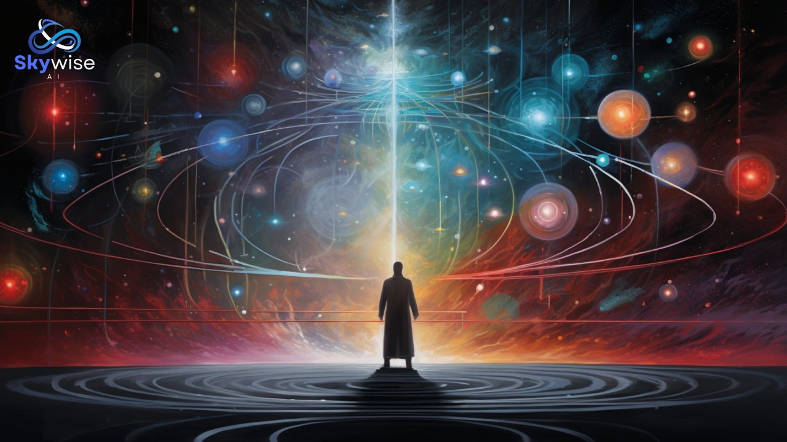
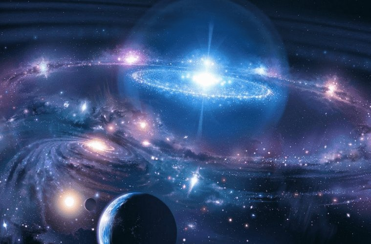
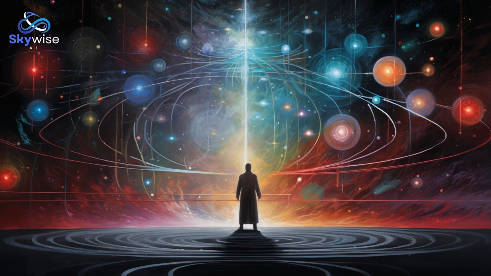
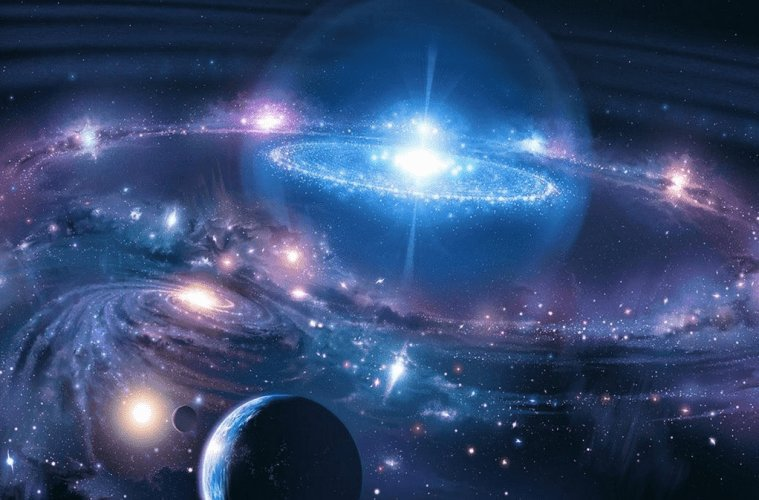

introduce
well hello there anyone who reading this site this site is made for create new whole au undertale let me explain this site like other story site... this site is unlike anything this verse is whole diffrent which give us chance to not hold backup freedom from undertale au this verse composite version but im might be bad this site
cosmology
ALTERNATE UNIVERSE:
let’s start most Lowest tier there is au but Universes called au and there is undetale underfell,... in this verse's alternate universe whole diffrent.undertale has 4 modes easy,normal,hard.lowest structure easy mode has 3 type of universe so there is 3 type multiverses universe also cover concepts of time space and dimension ... etc and after that we face infolines each infolines separate all universes of multiverse it said in destroytale multiverse's infolines is beyond for altoten which is all kind of mathematics multiverse has infinite infolines there are whole diffrent multiverses those multiverse has name those are easy Neutral,Genocide,Pacifist Route. so let explore higher structure of easy mode boundline-easy boundline-easy has infinite layers each layer contains 3 type multiverse and above layers transcendent from lower layers and just see them some kind of memory and choice.so now lets talk normal mode normal mode has boundline-normal that beyond layers types for easy mode normal modes 3 type multiverses beyond absolute transcendent after that we reach tomline tomline is work diffrent from infolines normal mode's multiverse's universe hold tomline cover layers of universe universe itself has immeasurable layers of timelines those layers timelines almost same but even some little diffrence contained and tomline making each timeline beyond impossibility possibility to other all timeline so even if there is impossibility then in immeasurable layer's one timeline this would be possible so any impossibility is possibility in tomline after that we reach hard mode hard has boundline-hard boundline-hard don't have Neutral,Genocide,Pacifist Route only one Route and boundline-hard has infinite great universe which is made of half mainframe half ultimate universe so boundline-hard's universe would be beyond for absolute all mathematics scientifics and theorems Philosophics or anything bigger than this still under boundline-hard's universe there is beyondline beyondline has infinite listed layer that all equally powerful but above each others whole structure diffrence would be 20% same 80% diffrent but other structure that didn't mentioned even thought this still part universe that structure is true Route what is true Route true Route is some kind whole structure that levelline levelline is level system that exist between all modes,multiverses and boundline-easy,normal,hard more about level system true Route doesn't follow and belong to anything from before structure laws and rules true Route has many voids that The present everywhere or seems to be always present and The state of existing outside absolutely everything and Absolute Derivation - Be the prime source of everything. Absolute Transcendence - Transcend absolutely everything, including itself, any forms of definition, limitations, and the concept of transcendence itself.Autopotence - Have absolute power over your own existence and everything related to it.All Archetypes All Traits. Complete Arsenal - Have every power and ability, thus being able to do absolutely anything. describe/Manipulate anything and everything, even the power itself.Absolutely and only one.Having always existed.Possess absolutely no weaknesses or outlets of harm.Be absolutely undefeatable.Be absolutely immune to damage or harm.Be unconstrained and unrestricted from anything.Be incomprehensible and undefinable by any means.Rule all things.Be in a state where one can no longer improve.
there is infinite universes just like undertale those universes's structure are 55% same 45% diffrent those diffrence is simular to each other but same level
HYPERVERSE
hyperverse considering as beyond infinitely Layered structure of Universes structure of Universes is infinite universe, it is very likely to be "AU Hyperverse" in the story of Voidtale and these tiers are the tiers of the beyond infinitely layered structure of Universes listed to lower and upper layers and each Layered structure of Universes are at same degree transcendent.after that we have Reality and Reality is part of hyperverse but go far beyond it.Reality is also container of infinite layers and Multi-theories, anti-theories, non-theories, philosophy, anti-philosophy,non-philosophy, truth, lies, ideas, mathematical, non-mathematical, anti-mathematical which all universes theories theological physical Philosophical of infinite universes and after that we have special working system of Hyperverse called infinite system which eah infinite above another infiniteness and this unending infinite above infinite which 2 infinite can scale higher than 1 infinite there is countless infinites above infinite And realities contain hyper-impossibility,possibility and hyper-anti-impossibility,possibility things are all included in those impossibility,possibility are above meaning of definition impossibility,possibility. Furthermore, Reality can transcend all normal layers mathematic of Time and Space of layer of Hyperverse, and each realities contain infinite layers, which transcends the mathematical Philosophical,Theological,meta-logical of infinite layers or low hyperverse. Furthermore, there are multiple typer of Reality, and Giga Reality, the most famous reality and one of the most powerful realities of them all,this Giga realities sees other powerful Reality and above infinite layer of hyperverse as mere thoughts or even more lower.Giga Reality unlike other realities this Giga reality type has own type of layer which type of layer that is scale beyond higher other layers but this reality cant reach to the Highest tier of Hyperverse only high hyperverse. However, the in destroytale mentions that one reality type called ultimate Reality and ultimate reality Higher than absolute all type of Reality, which is beyond larger than domian of all Giga Reality, and given the power of beyond Giga Reality, there is a possibility of reaching higher than Hyperverse itself. However, voidtale's azathoth implied that 1 reality the ultimate Reality is not only capable of comparing countless beyond Giga Realities, but also capable of holds an infinite number of hierarchies of Giga reality or whole hyperverse, and it is possible that it is already a ultimate reality scale higher than hyperverse's structure and countless type of realities and at the this time Giga realities would be all layers of hyperverse and our ultimate reality's domian is capable of scale above all Giga realities combined.transcendent existence is above embodiment of the all hyperverses itself and there is other multiple hyperverses and because new hyperverses are being created in everytime infinite hyperverses creates.number of hyperverses that created in time is countless absolute infinite
more about low realities
alternative universes
alternative universe is universe that exist above and beyond, outside of hyperverses alternative universes has infinite layered existence all those layer are equally powerful this universe has deep layer, middle layer, Further layer, beyond layer, those equally powerful but exist in deep or beyond to abyss abyss is beyond for Users reside or can be present outside of everything: space, time, non-space, non-time, duality, probability, improbability, possibility, impossibility, nonexistence, nothingness, existence, etc. Due to being outside of all forms of existence they cannot be affected by anything, even Paradox Manipulation or Reality Warping and are immune to absolutely everything, even Universal Irreversibility. abyss has 2 type 1 type is between all infinite alternative universes 2 type is in anti-void so more deep to abyss layers would become more outer and stronger structure but same level so let’s start from layers deep layer deep layers are transcending from hyperverses and whole true universe/4th wall and there is infinite deep layers more deeper layer called middle layer is same level as abyss itself which Users reside or can be present outside of everything: space, time, non-space, non-time, duality, probability, improbability, possibility, impossibility, nonexistence, nothingness, existence, etc. Due to being outside of all forms of existence they cannot be affected by anything, even Paradox Manipulation or Reality Warping and are immune to absolutely everything, even Universal Irreversibility.Further layer is some layer that deeper than middle layer this type layer's existence called supreme author existence more about supreme author beyond layer is type os layer that beyond for abyss itself maybe even more but those all and type of layer still part of alternative universe and still location is diffrent but still same and if one layer lose then all layers would fall too and there is infinite alternative universes
book of timeline
book of timline is made infinite type of timeline one type of timeline made of infinite amount timeline but those timeline is not normal timeline those timeline is actually infinite alternative universe so 1 type of timeline is infinite stacked timeline/alternative Universes and types of timeline support each others existence and there is DREAM REALM DREAM REALM has infinite DREAM LANDS DREAM LAND is almost beyond heaven let me explain what is meaning beyond heaven well DREAM LAND exist before every creation and alternative universes have absolute transcending from everything forever even thing that bringed by elder gods it keep transcending book of timeline is contains whole absolute everything of all type of timeline and there is working system of DREAM REALM so if type of timeline is page then DREAM REALM/absolute all fiction or any bigger thing than absolute fiction would be book cover
library of timeline
library of timeline has infinite leveled layers each leveled layer beyond comparison to each other now more Further one level has infinite same level's layers and each layer contain immeasurable catalogue and each catalogue has infinite books and of course those book are book of timeline so other 1 layer is contain and based on diffrent type of universe that instant alternative universes such as cosmic universe, narrotive universe, ... so there is above and lower level's layers would beyond comparison
 


